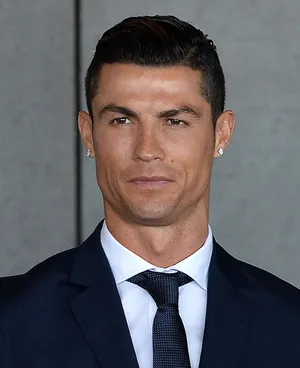

Early life and career Ronaldo’s father, José Dinis Aveiro, was the equipment manager for the local club Andorinha. (The name Ronaldo was added to Cristiano’s name in honour of his father’s favourite movie actor, Ronald Reagan, who was U.S. president at the time of Cristiano’s birth.) At age 15 Ronaldo was diagnosed with a heart condition that necessitated surgery, but he was sidelined only briefly and made a full recovery. He first played for Clube Desportivo Nacional of Madeira and then transferred to Sporting Clube de Portugal (known as Sporting Lisbon), where he played for that club’s various youth teams before making his debut on Sporting’s first team in 2002.
On his home soil, after moving through the youth and under-21 ranks, Ronaldo had made his first appearance for Portugal’s full national team against Kazakhstan in August 2003 (four days after his debut for United). He was a key player in Portugal’s fourth-place finish at the 2006 World Cup and became the full-time captain of the national team in 2008. In 2012 his stellar play led Portugal to the semifinals of the European Championship, where his team was eliminated by rival Spain in a match that was decided by a penalty kick shoot-out. Ronaldo came into the 2014 World Cup hot off of his second world player of the year win, but his play at the tournament was spotty, and the entire Portugal team struggled during a group-stage elimination. In 2016 he helped Portugal win the European Championship, the country’s first major international tournament title, although he only played paringly in the final because of a knee injury that he had sustained early in the match. Ronaldo played brilliantly at the 2018 World Cup, scoring four goals in four games as Portugal advanced to the knockout round only to lose its first match of that stage to a strong defensive Uruguay side. Four years later Ronaldo became the first male player to score at five different World Cups. However, he was not part of the starting lineup for several games, and Portugal’s 2022 World Cup ended with a loss in the quarterfinals.
Ronaldo was one of the most well-known sports stars off the field, and numerous studies of athletes’ popularity showed that he was the most-beloved athlete in the world during his playing peak. His extreme popularity made Ronaldo one of the highest-paid endorsers in sports history, and in November 2016 he became the third person (after basketball superstars Michael Jordan and LeBron James) to earn a “lifetime” contract from the sportswear company Nike. Moreover, he established his own successful “CR7” brand of products that included shoes, underwear, and fragrances. Ronaldo’s immense marketability was at the centre of a legal issue that arose in June 2017. That month prosecutors filed a lawsuit that accused Ronaldo of defrauding the Spanish government of €14.7 million ($16.5 million) by hiding his image-rights income in Spain from 2011 to 2014. He was accused of having underestimated the income he earned from the sale and licensing of his image rights and the accompanying tax obligations, but Ronaldo denied all allegations. However, in June 2018 he accepted a suspended two-year prison sentence and agreed to pay €18.8 million ($21.8 million) to the Spanish government to settle the case.
